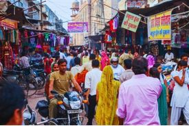
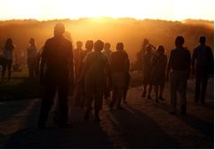
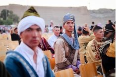
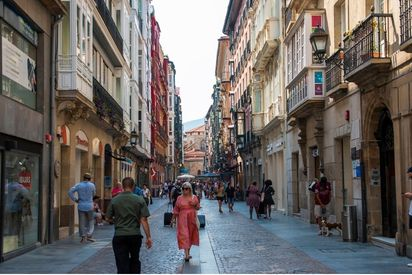
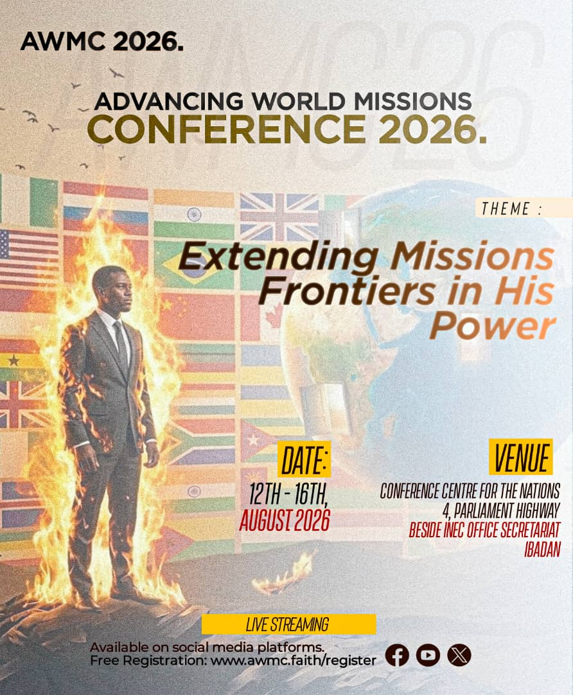

Speaker Profile
increasing by 2.5 people every second
A geographic band stretching from North Africa to East Asia, between 10 and 40 degrees north latitude.
Home to the vast majority of the world's Muslims, Hindus, and Buddhists, residing in thousands of distinct ethnic groups.
Over 90% of all unreached peoples live here, yet they receive less than 1% of global missionary resources and funding.
Millions are born and die without ever meeting a single Christian, having a Bible in their language, or seeing a church.




They are not numbers. They are people. Each one created and loved by God but completely cut off from hope.
We are gathering to change the statistics. To align, mobilize, and commission the body of Christ to bring the Gospel to the final frontiers of the earth.

Learn from seasoned missions leaders, pioneers, and mobilizers dedicated to extending missions frontiers in His power.
Find clear answers to help you prepare, register, and plan for your attendance at AWMC 2026.